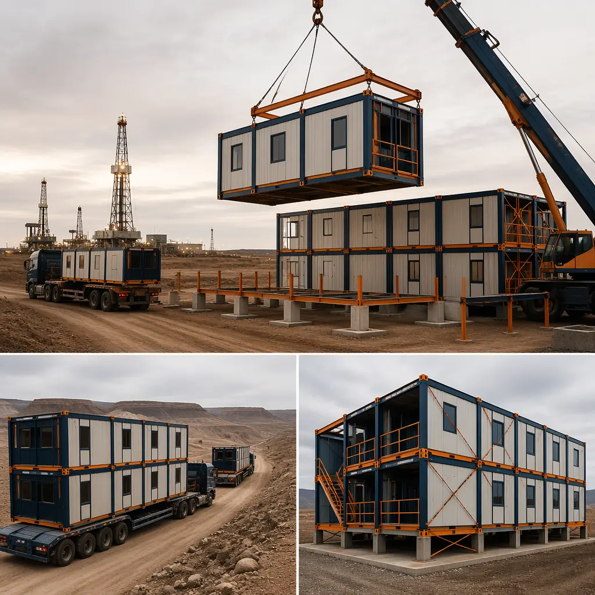
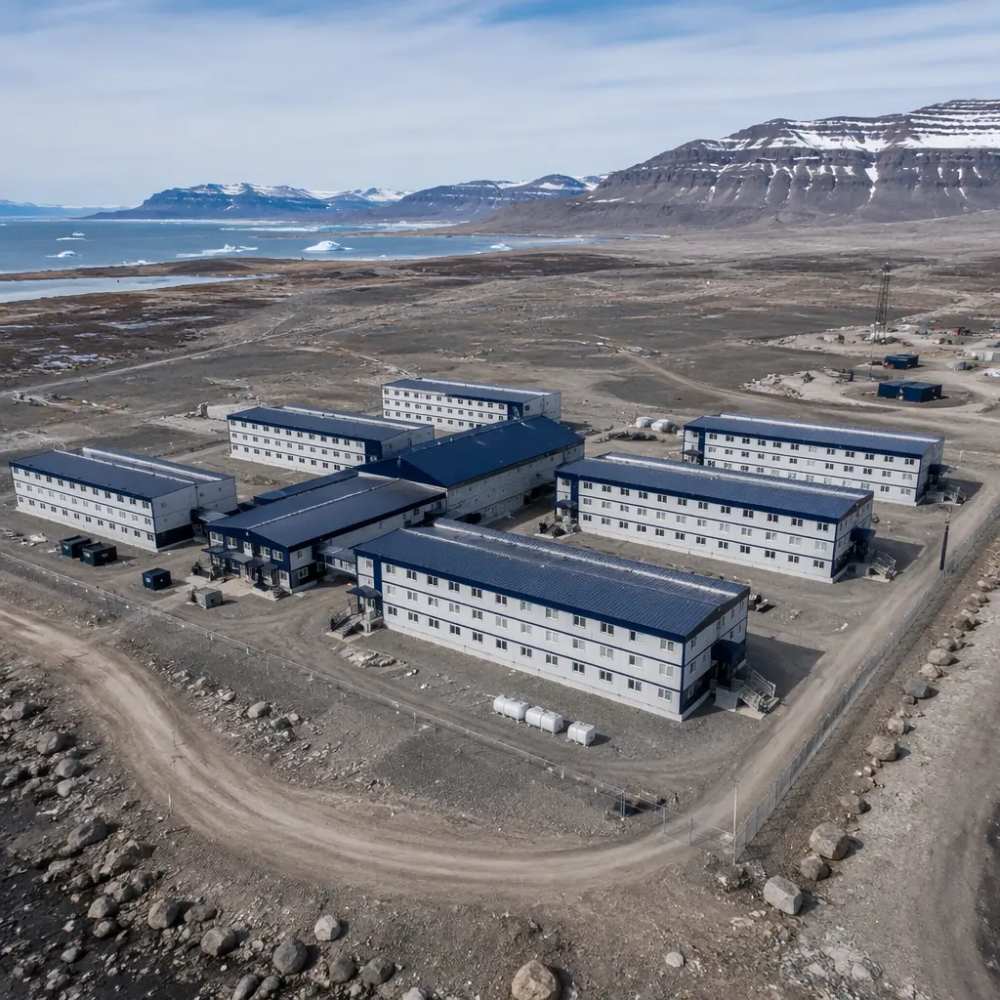
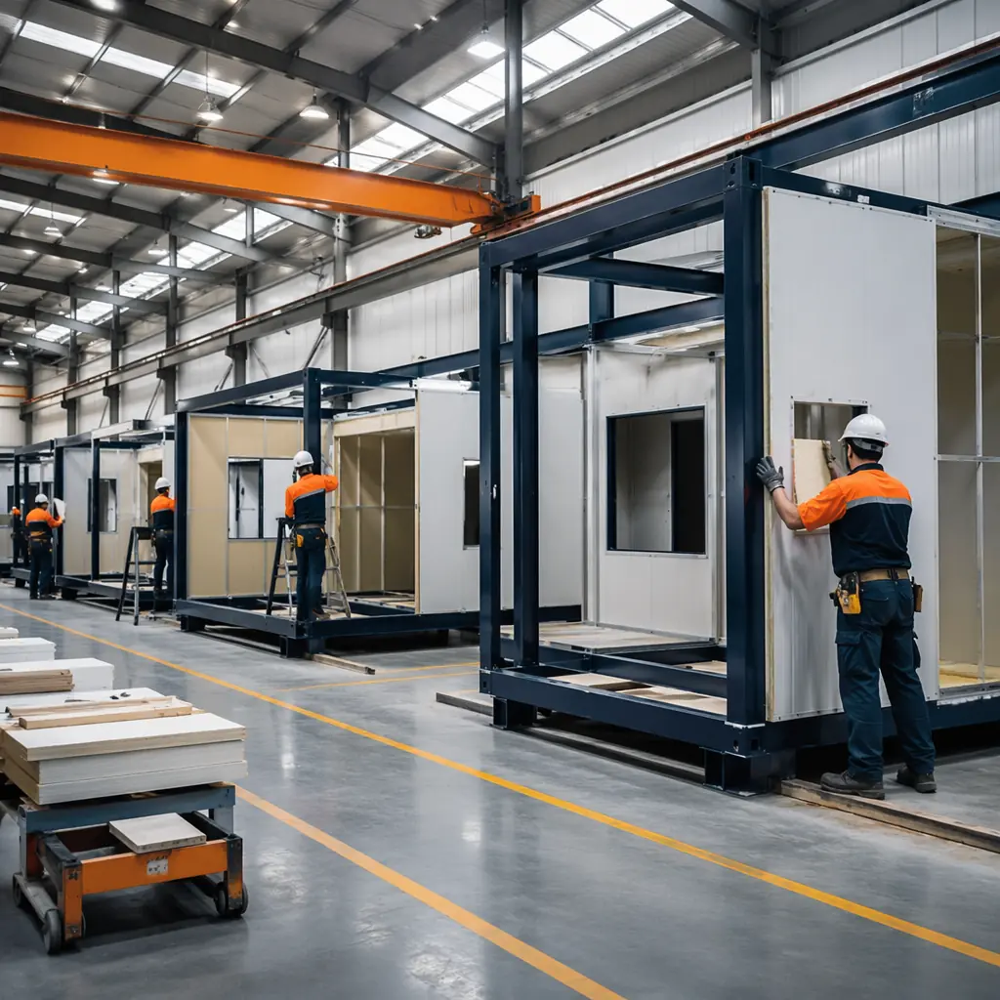
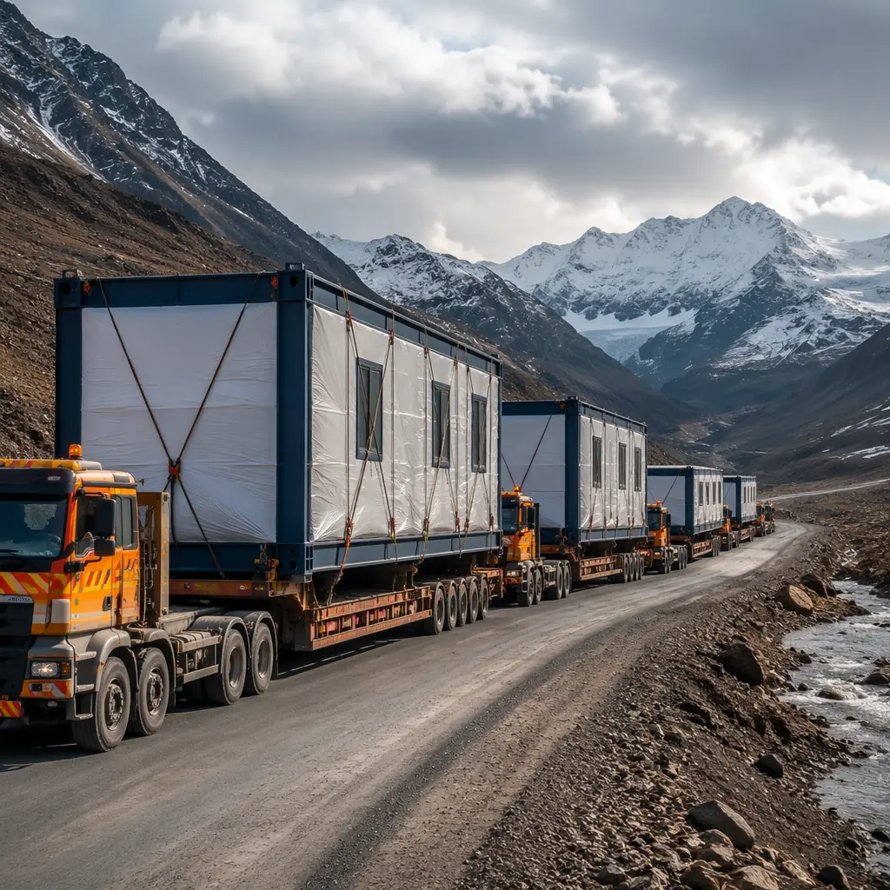

Remote projects have a housing problem. A mining operation in the Chilean Atacama, an LNG facility in northern British Columbia, a dam project in the Ethiopian highlands — every one of them needs to house hundreds of workers before a single shovel hits the ground. Traditional camp construction on remote sites takes 8–14 months and costs $75,000–$110,000 per bed. Modular workforce housing, built in factories and shipped to site, cuts that timeline to 16–24 weeks and brings per-bed costs down to $45,000–$65,000. For project developers watching carrying costs tick upward by the day, the difference isn't theoretical — it's the margin between project approval and cancellation.

The Workforce Housing Challenge in Remote Projects
Remote project housing faces compounding constraints that urban construction never encounters:
Logistics distance. A mining camp 400 km from the nearest paved road can't absorb daily deliveries of concrete, lumber, and drywall. Every kilogram of material that travels that distance represents fuel, driver hours, and weather risk. Modular units consolidate 85–90% of the finished building into a single shipment per module — one flatbed delivery replaces dozens of material runs.
Labor availability. Remote sites compete with every other project for skilled trades. A traditional camp build might need 80–120 on-site construction workers for 8–10 months. A modular deployment needs 15–25 workers for 4–6 weeks of site assembly — the rest of the labor happens in a factory with a stable, trained workforce.
Weather windows. In northern Canada, the construction season is May through October. In the Saudi interior, summer temperatures make outdoor work dangerous from June through September. Factory production eliminates weather dependency — modules are built year-round in climate-controlled facilities and stockpiled for transport during the site's weather window.
Worker welfare and retention. The global mining and energy sectors are losing skilled workers faster than they can recruit them. One of the top three reasons operators cite for leaving is poor camp conditions. Modular housing delivers hotel-quality accommodation that measurably improves retention — a critical factor when replacing a single skilled operator costs $50,000–$80,000 in recruitment and training.

How Modular Construction Solves the Remote Housing Problem
Modular workforce housing reverses the traditional construction sequence to eliminate the three biggest cost drivers in remote projects: site labor, logistics rework, and timeline uncertainty.
The modules are built to 95% completion in a factory — fully wired, plumbed, insulated, and furnished with beds, lockers, desks, and bathroom fixtures. When they arrive on-site, they need only crane placement, module-to-module utility connections, and final commissioning. The contrast with traditional construction — where every trade works sequentially on a exposed site — is dramatic:
- Factory production: 12–18 weeks for a 200-bed camp (all modules produced simultaneously on parallel assembly lines).
- Site preparation: 4–8 weeks running concurrently with factory production — foundation pads, utility trenches, perimeter security.
- Module installation: 2–4 weeks. A 200-bed camp's modules can be craned into position in 10–15 working days.
- Site connections and commissioning: 2–4 weeks for MEP tie-in, fire alarm integration, water treatment, and occupancy certification.
This parallel workflow is what delivers the 16–24 week total timeline — and why the method is fundamentally different from simply "building faster." It's not faster construction. It's overlapping production streams that traditional construction must run sequentially. For a more detailed comparison of modular versus conventional approaches, see our modular vs. traditional construction guide.
On a recent remote mining project in West Africa, a modular 300-bed camp was delivered in 20 weeks — including ocean freight from factory to port and 280 km of overland transport. The traditional tender for the same scope came in at 14 months and $17M higher. The project broke ground four months after contract signing because the modules were already under construction while site preparation was underway.

Module Types — From Single-Occupancy to Full Camp Facilities
Workforce housing isn't one product. A geologist's quarters at an exploration camp differ from a drilling crew bunkhouse, which differs from the supervisory wing of a permanent mining operation. Modular production accommodates all of these with standardized module types:
| Module Type | Occupancy | Floor Area | Typical Use |
|---|---|---|---|
| Single-Occupancy Module | 1 person | 18–22 m² | Supervisors, engineers, long-term staff |
| Double-Occupancy Module | 2 persons | 24–28 m² | Technical staff, rotating crews |
| Shared Bunk Module | 4 persons | 32–36 m² | Construction crews, seasonal workers |
| Ablution Module | Shared | 18–24 m² | Showers, toilets, laundry — pre-plumbed |
| Kitchen & Mess Module | Serves 50–200 | 48–96 m² | Commercial kitchen, dining hall |
| Recreation & Medical Module | Shared | 36–72 m² | Gym, lounge, first-aid clinic |
| Administration Module | 4–8 workstations | 24–36 m² | Camp management offices, security |
All module types share a common steel frame and connection system, so a 50-bed exploration camp can be expanded to 300 beds by adding modules without structural modification. This scalability is particularly valuable for mining projects that ramp up from exploration to production over 3–5 years — the initial camp becomes a permanent facility by adding modules rather than building a second camp from scratch.
Timeline — From Contract to Occupancy in 16–24 Weeks
The accelerated timeline is the primary reason project developers choose modular for workforce housing, and the schedule is predictable because it removes the variables that make remote construction timelines unreliable:
- Weeks 1–4: Engineering and Permitting. Module design, structural engineering for site-specific loads (wind, seismic, snow), and permit submission. Because modules use a pre-approved structural system, engineering proceeds from a catalog of tested configurations rather than starting from a blank page.
- Weeks 3–16: Factory Production. Modules are built on parallel production lines — accommodation modules, service modules, and common-area modules all progress simultaneously. Factory production operates 24/7 in three shifts if the project timeline demands it.
- Weeks 4–12: Site Preparation (concurrent). Foundation pads, underground utilities, water storage tanks, wastewater treatment, generator pads, fuel storage, perimeter fencing, and access roads. All site work runs in parallel with factory production.
- Weeks 14–18: Transport and Installation. Modules ship via flatbed, container vessel, or rail — whichever combination minimizes cost and transit time for the project location. On-site installation averages 30–40 modules per week with a single crane crew.
- Weeks 18–22: Connections and Commissioning. Inter-module MEP connections, water treatment system commissioning, generator and electrical distribution testing, fire alarm and life-safety certification, furniture and appliance installation.
- Weeks 22–24: Occupancy. Final inspection, staff training, and phased move-in.
The 16-week minimum is achievable for projects with pre-approved designs, straightforward site conditions, and domestic transport logistics. The 24-week maximum accounts for ocean freight, complex terrain, or custom module configurations. For context on the financial implications of this timeline compression, see our modular construction ROI guide.

Cost Comparison — Modular vs. Traditional Camp Construction
Remote construction costs are dominated by logistics, labor, and time — not materials. This is why modular camps, despite the added cost of factory production and transport, come in 30–40% below traditional construction:
| Cost Category | Traditional (200-bed camp) | Modular (200-bed camp) | Savings |
|---|---|---|---|
| On-Site Labor | $6.5M–$8.0M | $1.2M–$1.8M | $4.7M–$6.8M |
| Materials & Logistics | $5.0M–$6.5M | $5.5M–$7.0M (incl. factory + freight) | −$0.5M to −$1.0M |
| Site Infrastructure | $3.0M–$4.0M | $2.5M–$3.5M | $0.5M |
| Project Management | $1.8M–$2.5M (12–14 months) | $0.8M–$1.2M (5–6 months) | $1.0M–$1.3M |
| Worker Accommodation During Build | $2.0M–$3.0M (temp camp for builders) | $0.3M–$0.5M (small temp setup) | $1.7M–$2.5M |
| Total Construction Cost | $18.3M–$24.0M | $10.3M–$14.0M | $8.0M–$10.0M (35–42%) |
| Cost Per Bed | $92K–$120K | $52K–$70K | $40K–$50K per bed |
The materials-and-logistics line is the only category where modular costs more — you're paying for factory labor, quality control, and finished-module transport instead of raw-material delivery. But that premium is overwhelmed by the savings in on-site labor (down 70–80%) and timeline compression (project management costs cut by half, temporary worker housing nearly eliminated).
The bigger number — often missed in procurement comparisons — is project acceleration revenue. A copper mine generating $120M in annual revenue that starts production 6 months earlier captures $60M in additional revenue. A 200-bed modular camp that enables that acceleration pays for itself 3–5 times over before the traditional camp would have been ready for occupancy.
Durability and Lifecycle — Built for Harsh Environments
Workforce housing modules face conditions that would destroy standard construction in a single season. MODURA modules are engineered for these environments from the steel frame up:
- Temperature range: −40°C to +55°C operational. Insulated panel systems achieve R-30 to R-40 wall values and R-40 to R-50 roof values — critical when diesel for heating costs $1.50–$3.00 per liter at remote sites.
- Seismic performance: Steel frame modules are engineered to Seismic Design Category D (UBC Zone 4 equivalent). The moment-resisting steel connections that join modules on-site perform better under seismic load than traditional stick-frame construction.
- Wind resistance: Modules are structurally rated for 250 km/h wind loads (Category 5 cyclone/hurricane equivalent) when properly anchored to engineered foundations.
- Corrosion protection: Hot-dip galvanized steel frames (minimum 85μm zinc coating) for coastal and high-humidity environments. Optional marine-grade stainless connection hardware for offshore platform accommodation modules.
- Fire rating: 60-minute fire separation between modules as standard. 120-minute separation available for high-risk installations.
Designed service life is 25–30 years with standard maintenance. Because modules can be decoupled and relocated, a camp that serves a 5-year construction project can be disassembled, transported, and recommissioned at the next project — effectively delivering multiple deployments from a single capital investment. This reusability also dramatically reduces lifecycle carbon compared to single-use traditional construction.
Compliance and Worker Welfare Standards
Worker welfare is no longer optional in extractive industries. The IFC Performance Standards (specifically PS2: Labor and Working Conditions) and ILO Convention C110 (Accommodation of Workers) set minimum requirements that traditional remote camps often struggle to meet:
- Minimum floor area: 5.5 m² per person for shared accommodation, 9 m² for single occupancy (ILO C110). Modular modules deliver 6–9 m² per person in shared and 18–22 m² in single — exceeding ILO minimums by 30–100%.
- Sanitation ratios: 1 toilet per 15 workers, 1 shower per 15 workers (IFC PS2). Modular camps are designed to 1:10 ratios as standard.
- Climate control: Heating and cooling adequate for local climate extremes — not just "provided" but engineered to maintain 20–24°C interior temperature at design-basis exterior conditions.
- Natural light and ventilation: Every accommodation module includes operable windows with insect screens and blackout curtains — features that are routinely value-engineered out of traditional camp builds.
- Recreation and connectivity: Dedicated recreation modules with satellite internet, television, gym equipment, and quiet spaces. IFC guidance recognizes that recreation access directly impacts worker mental health and retention.
MODURA's factory production environment also enables compliance documentation that field construction cannot match: every module carries a digital birth certificate with material certifications, weld inspection records, insulation installation photographs, and pressure-test results — audit-ready documentation for IFC compliance reviews and lender due diligence.
Will Modular Work for Your Remote Project?
Modular workforce housing delivers the strongest ROI when these conditions are present — and the more conditions that apply, the stronger the case:
- Site is more than 100 km from a major population center. The logistics penalty of traditional construction rises exponentially with distance. Modular's single-delivery-per-module model gets more advantageous the further the site is from supply chains.
- You need 50+ beds. Below 50 beds, the transport and crane mobilization costs may outweigh factory production savings. Above 200 beds, modular's per-unit cost advantage is maximum.
- Timeline compression has revenue impact. If the project generates $50M+ annually and accelerating startup by 4–6 months captures material revenue, the camp cost is secondary — the revenue acceleration pays for the camp.
- Labor market is tight. If you're competing with three other projects for skilled construction labor within 500 km, modular's 80% reduction in on-site labor demand is a structural advantage, not just a cost saving.
- Weather constrains your construction season. Projects with fewer than 8 months of viable outdoor construction per year benefit disproportionately from year-round factory production.
- Worker welfare and retention matter. If your project relies on skilled operators with 5+ years of experience, the retention impact of better housing alone can justify the modular premium — losing and replacing two senior operators due to camp quality complaints costs more than the upgrade to modular housing for the entire workforce.
MODURA has delivered workforce housing camps across 18 countries on four continents — from Arctic exploration camps operating at −45°C to desert production facilities at +50°C. Our four factories on three continents provide the production capacity and geographic flexibility to serve projects anywhere in the world. For project developers, EPC contractors, and mining operators, modular workforce housing is no longer an interesting alternative — it is increasingly the financial baseline against which traditional bids are measured and found lacking.
Planning a remote workforce housing project? Contact our team for a feasibility assessment including timeline projections, per-bed cost estimates, and module configuration options tailored to your project location and workforce size. We provide fixed-price proposals with guaranteed delivery dates — because remote projects can't afford uncertainty.